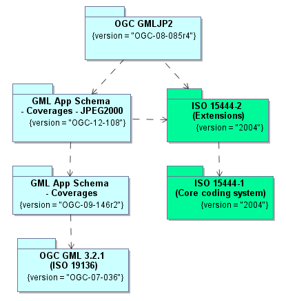

Conformance Test Suite - GML in JPEG 2000
Scope
This executable test suite (ETS) verifies the conformance of JPEG 2000 codestreams against OGC GML in JPEG 2000 (GMLJP2) Encoding Standard Part 1 (OGC 08-085r4) and related specifications (see Figure 1). The JPEG 2000 standard (ISO 15444 series) is a wavelet-based encoding for imagery that provides the ability to include XML data for description of the image within the JPEG 2000 data file.
Figure 1 - Relevant specifications
The relevant conformance classes are defined in the principal specification:
- Core (http://www.opengis.net/spec/GMLJP2/2.0/conf/core)
- See OGC 08-085r4: A.1
Test suite structure
The test suite definition file (testng.xml) is located in the root package, org.opengis.cite.gmljpx20. A conformance class corresponds to a <test> element; each test element includes a set of test classes that contain the actual test methods. The general structure of the test suite is shown in Table 1.
| Conformance class | Test classes |
|---|---|
| Core |
|
The Javadoc documentation provides more detailed information about the test methods that constitute the suite.
Test requirements
The documents listed below stipulate requirements that must be satisfied by a conforming implementation.
- OGC 08-085r4: OGC GML in JPEG 2000 (GMLJP2) Encoding Standard Part 1: Core, Version 2.0
- OGC 12-108: OGC GML Application Schema - Coverages - JPEG2000 Coverage Encoding Extension, Version 1.0
- OGC 09-146r2: OGC GML Application Schema - Coverages, Version 1.0.1
- ISO/IEC 15444-2:2004: Information technology -- JPEG 2000 image coding system: Extensions
- ISO/IEC 15444-1:2004: Information technology -- JPEG 2000 image coding system: Core coding system
How to run the tests
The test suite may be run in any of the following environments:
- Integrated development environment (IDE): The main Java class is TestNGController.
- RESTful API: Submit a request that includes the necessary arguments to the test run controller (/rest/suites/gmljpx20/0.1-SNAPSHOT/run).
- TEAM-Engine: Run the CTL script located in the /src/main/ctl/ directory.
The test run arguments are summarized in Table 2. The Obligation descriptor can have the following values: M (mandatory), O (optional), or C (conditional).
| Name | Value domain | Obligation | Description |
|---|---|---|---|
| iut | URI | M | A URI that refers to the test subject or metadata about it. Ampersand ('&') characters must be percent-encoded as '%26'. |